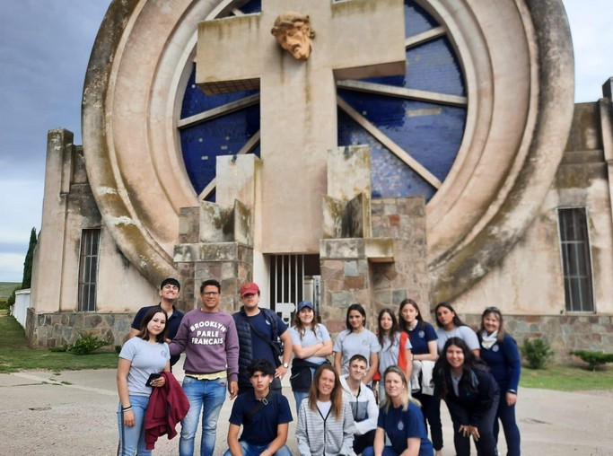

Saldungaray
Portal del cementerio
De estilo Art Decó, esta imponente estructura simboliza el tránsito entre la vida y la muerte. Su diseño presenta una cruz monumental que emerge de una gran rueda, en cuyo centro se encuentra el rostro de Cristo. Según el ángulo desde el cual se lo observe, dicho rostro expresa diferentes emociones: dolor, sufrimiento y muerte.
Provincia de Buenos Aires